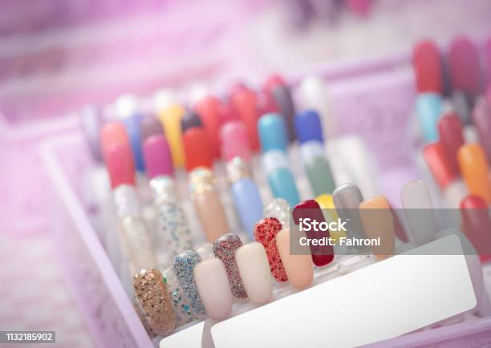
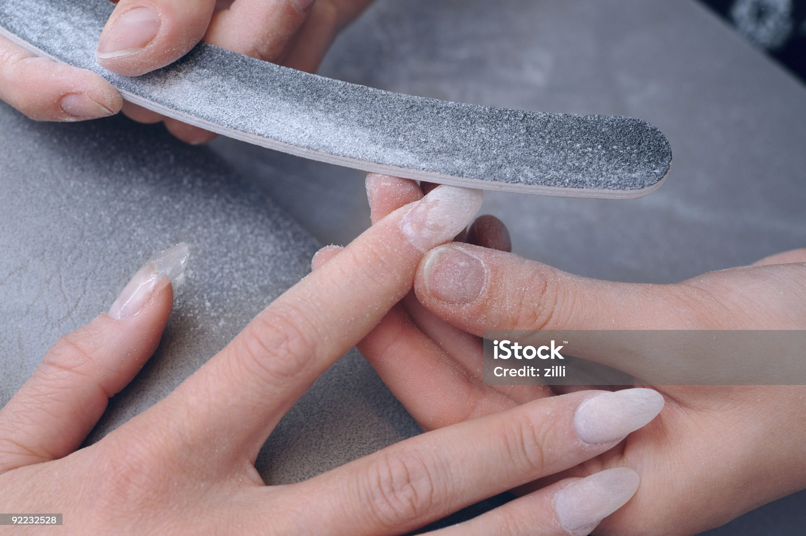

Frutilla Triste
Qué son las press-on



Las uñas press-on son uñas de acrílico que se ponen pegadas encima de tus uñas naturales. Estas pueden durar entre 10 y 15 días pegadas. La gracia de estas uñas es que pueden ser reutilizadas y que no causan daños en tus uñas naturales. Para más información, puedes ver el siguiente video que lo explica en profundidad.